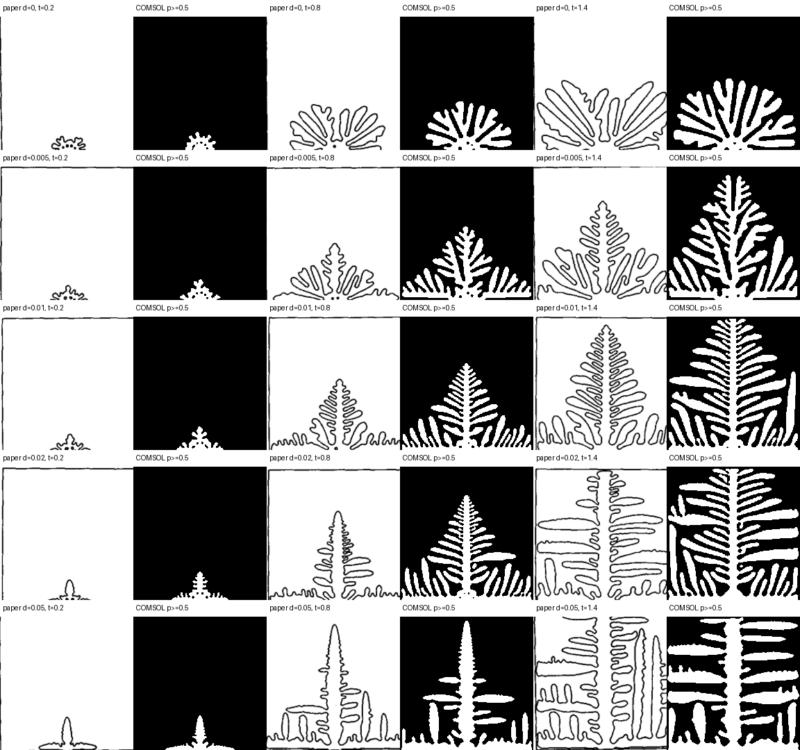

结论
独立审查：接受。 方程翻译、执行记录、哈希链、守恒检查和全部 12 项冻结验收标准一致通过。结论支持定性形貌机制与趋势，不宣称逐像素一致或材料 SI 标定。
0.3283
Fig. 7 平均轮廓 IoU，门槛 ≥ 0.25
0.0262
归一化 contour Chamfer，门槛 ≤ 0.10
1.8509×
δ=.05 / δ=0 主枝长度比
复现问题
目标论文为 R. Kobayashi, Modeling and numerical simulations of dendritic crystal growth, Physica D 63 (1993) 410–423。复现重点是论文 Fig. 7：四重各向异性强度 δ 是否控制枝晶主枝速度与方向选择。
模型使用相场 p 与温度 T 两个标量场。实现中固定变量顺序为 [p,T]，通过方向相关界面系数表达各向异性，并以潜热项耦合温度场。
执行过程
- Research：冻结论文 PDF 哈希，定位 Eq. (3)、Eq. (5)、Fig. 7 参数和原文未报告项。
- Theory：按
ea / da / Γ / f / g / q拆解论文方程，明确零通量边界与守恒量。 - Builder：用 Java API 构建两套 General Form PDE，生成可执行 MPH 模型。
- Automation：执行 5 档 δ、2 个无噪声对照，以及网格、时间步和晶核半径敏感性分析。
- Reviewer：独立核对作业状态、日志、文件哈希、焓守恒、收敛性和 Fig. 7 轮廓指标。
论文与 COMSOL 对照

p ≥ 0.5 轮廓对照。比较覆盖 δ=0–0.05 和三个时刻，目标是趋势与形貌类别一致。| 检查项 | 结果 | 验收门槛 |
|---|---|---|
| δ=.05 纵/横尺度比 | 2.0135 | > 1.10 |
| 网格主枝相对差 | 0.354% | ≤ 5% |
| 时间步主枝相对差 | 0.000% | ≤ 5% |
| 晶核半径敏感性 | 0.211% | ≤ 15% |
| 最大相对焓漂移 | 2.09×10⁻¹³ | ≤ 1% |
结论边界
- 论文没有报告晶核半径、随机种子和噪声更新频率；复现采用公开假设、确定性噪声和无噪声对照。
- 计算使用论文的无量纲尺度，不能直接解释为某种具体材料的 SI 预测。
- 时间步主枝指标的零差异受阈值量化影响，不代表完整场完全相同。
- 验收支持论文所述的各向异性趋势与形貌类别，而非每个轮廓的像素级复制。